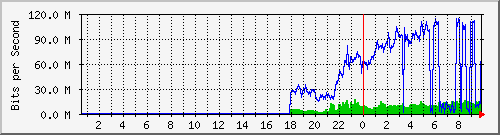
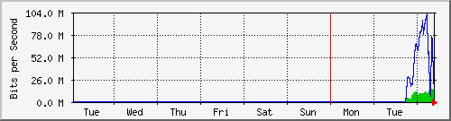
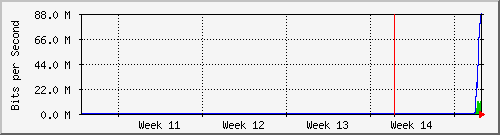

Dist_CCR1036 - if12
The statistics were last updated Wednesday, 8 April 2026 at 9:50,
at which time 'MikroTik-CCR1036' had been up for 58 days, 13:16:13.
`Daily' Graph (5 Minute Average)

|
Max |
Average |
Current |
| In: |
19.0 Mb/s (1.9%) |
9193.8 kb/s (0.9%) |
13.8 Mb/s (1.4%) |
| Out: |
114.0 Mb/s (11.4%) |
55.1 Mb/s (5.5%) |
110.6 Mb/s (11.1%) |
`Weekly' Graph (30 Minute Average)

|
Max |
Average |
Current |
| In: |
14.9 Mb/s (1.5%) |
8912.5 kb/s (0.9%) |
12.7 Mb/s (1.3%) |
| Out: |
101.6 Mb/s (10.2%) |
54.3 Mb/s (5.4%) |
59.5 Mb/s (6.0%) |
`Monthly' Graph (2 Hour Average)

|
Max |
Average |
Current |
| In: |
10.8 Mb/s (1.1%) |
6960.9 kb/s (0.7%) |
10.6 Mb/s (1.1%) |
| Out: |
87.2 Mb/s (8.7%) |
51.4 Mb/s (5.1%) |
87.2 Mb/s (8.7%) |
`Yearly' Graph (1 Day Average)

|
Max |
Average |
Current |
| In: |
0.0 b/s (0.0%) |
0.0 b/s (0.0%) |
0.0 b/s (0.0%) |
| Out: |
0.0 b/s (0.0%) |
0.0 b/s (0.0%) |
0.0 b/s (0.0%) |
| GREEN ### |
Incoming Traffic in Bits per Second |
| BLUE ### |
Outgoing Traffic in Bits per Second |